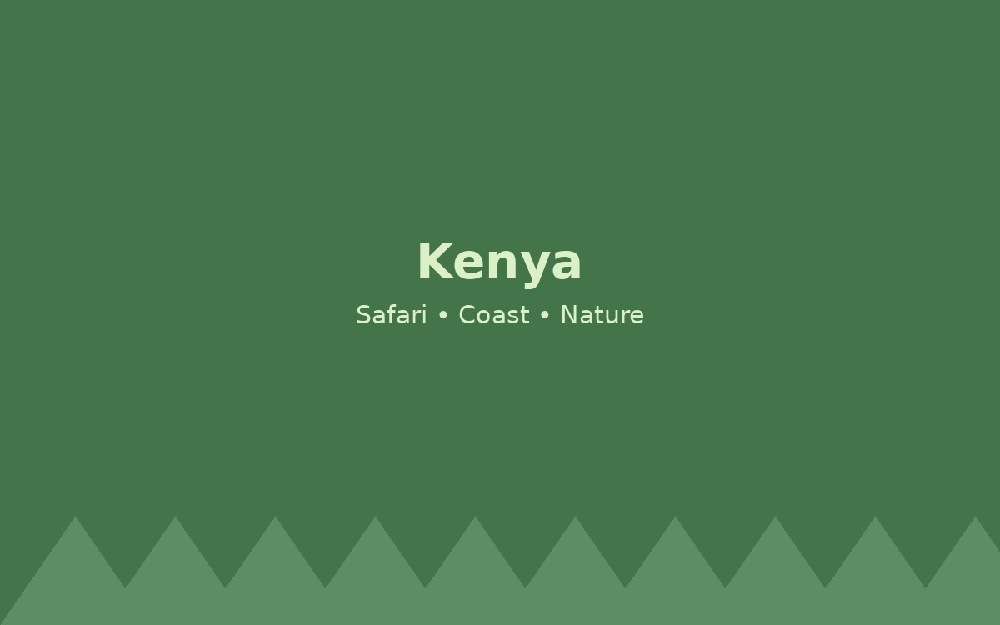

Kenya

Kenya is a great destination for travelers who enjoy nature, wildlife, and adventure. It is known for national parks, safari tours, beautiful coastlines, and cultural experiences.
Things to Do
Go on a safari, visit Nairobi, see wildlife, and enjoy the coast near Mombasa.
Why Visit?
This destination was included because it gives travelers a mix of history, culture, food, and memorable experiences.